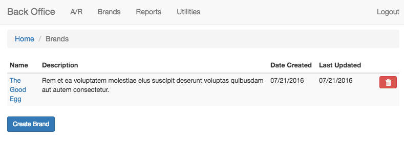
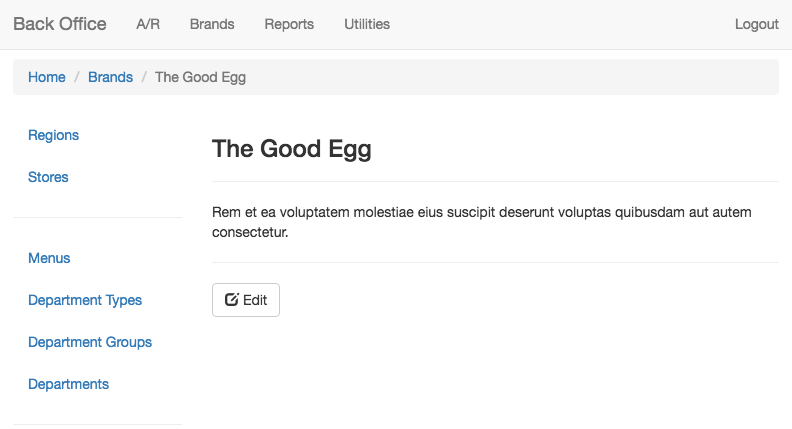

Angular in Sasnak
Well, at High Touch
What is Angular?
JavaScript MVW Framework
MVW - Model-View-Whatever
Developed at Google
Gives us Single Page UI / UXP
Think Gmail, Facebook etc.
Usage in Sasnak
Administrative / Back Office
Usage in Sasnak
Administrative / Back Office
Why ____________ (Angular)?
Do we need single page?
Nope
Common / Core Structure
Flexibility
Develop to an API
Potential Mobile Support
Component
@Component({
templateUrl: 'app/components/brands/brand-list.html',
providers: [BrandService]
})
export class BrandListComponent implements OnInit {
brands: Observable;
constructor(private _brandService: BrandService) { }
ngOnInit() {
this.brands = this._brandService.brands$;
this._brandService.loadBrands();
}
}
HTML
<brand-list-component />